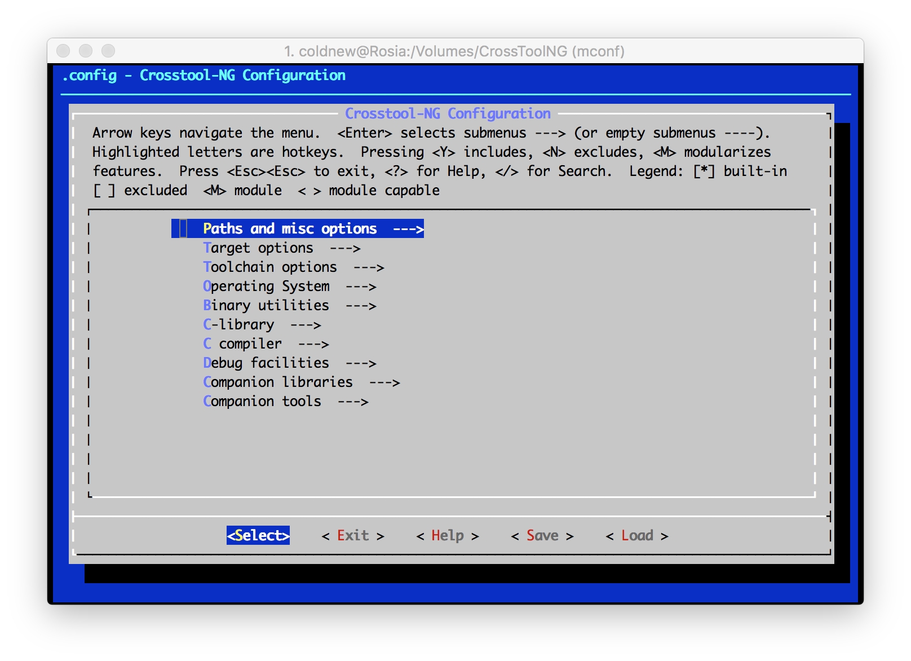

在 Zephyr RTOS 開發記錄: 基本環境建立 一文中提到了我們如何安裝 Zephyr SDK 到 Linux 系統來進行開發，那如果我想要在 Mac OSX 上面開發要怎麼辦呢？
由於 Zephyr SDK 目前僅提供 Linux 的版本，因此在 Mac OSX 中我們必須自己透過 crosstool-ng 去編譯我們自己的 SDK。
安裝依賴的相關套件
第一步要做的，當然就是安裝相關套件啦，這點我們直接透過 homebrew 來安裝
coldnew@MacOSX ~ $ brew install gettext qemu help2man mpfr gmp coreutils wget
接下來我們要安裝 GNU 的 grep 命令來替代系統內建的 grep 命令
coldnew@MacOSX ~ $ brew tap homebrew/dupes coldnew@MacOSX ~ $ brew install grep --default-names
接著，安裝我們需要用的程式: crosstool-ng
coldnew@MacOSX ~ $ brew install crosstool-ng
建立編譯環境
安裝好 crosstool-ng 後，我們需要建立一個 Case Sensitive 的 HFS+ 硬碟來讓 MacOSX 可以順利編譯，以下為我建立這顆硬碟所用的命令 (佔 10G 的硬碟空間)
hdiutil create -volname CrossToolNG -type SPARSE \ -fs 'Case-sensitive Journaled HFS+' \ -size 10g CrossToolNG.sparseimage
完成後，打開 CrossToolNG.sparseimage 這個映像檔，他會被掛載到 /Volumes/CrossToolNG 去
coldnew@MacOSX ~ $ open CrossToolNG.sparseimage
接著我們就切換到 /Volumes/CrossToolNG 來準備進行我們的編譯，順便建立一個 src 資料夾讓 crosstool-ng 存放他下載的原始碼
coldnew@MacOSX ~ $ cd /Volumes/CrossToolNG && mkdir src
我們先複製 Zephyr 裡面提供的設定檔到當前目錄
coldnew@MacOSX /Volumes/CrossToolNG $ cp ${ZEPHYR_BASE}/scripts/cross_compiler/x86.config .config
如果你有什麼設定要修正的話，可以使用 ct-ng menuconfig 來進行修改
coldnew@MacOSX /Volumes/CrossToolNG $ ct-ng menuconfig

另外，在進行編譯前要確認以下幾個設定是否和你編譯目錄 (/Volumes/CrossToolNG) 一致
CT_LOCAL_TARBALLS_DIR="/Volumes/CrossToolNG/src" # CT_SAVE_TARBALLS is not set CT_WORK_DIR="${CT_TOP_DIR}/.build" CT_PREFIX_DIR="/Volumes/CrossToolNG/x-tools/${CT_TARGET}" CT_INSTALL_DIR="${CT_PREFIX_DIR}"
都確認沒問題後，就開始我們的編譯吧 gogogo ~
coldnew@MacOSX /Volumes/CrossToolNG $ ct-ng build
接著你可以去泡杯咖啡或出去走走，編譯工具鍊 (toolchain) 很花時間的
設定編譯環境
完成編譯我們要的工具鍊 (toolchain) 後，我們可以在 /Volumes/CrossToolNG 看到以下的資料夾，其中 x-tools 就是我們編譯出來的結果
coldnew@MacOSX /Volumes/CrossToolNG $ tree -L 1. . <b> ├── build.log <g> ├── config -> /usr/local/Cellar/crosstool-ng/1.22.0/lib/crosstool-ng-1.22.0/config <lb> ├── config.gen <b> ├── src <b> └── x-tools <b> 4 directories, 1 file
最後，在你的 ~/.zephyrrc 設定這些環境變數就可以去嘗試編譯你的 Zephyr kernel 看看囉 ~
coldnew@MacOSX ~ $ vim ~/.zephyrrc export XTOOLS_TOOLCHAIN_PATH=/Volumes/CrossToolNG/x-tools export ZEPHYR_SDK_INSTALL_DIR=${XTOOLS_TOOLCHAIN_PATH} export ZEPHYR_GCC_VARIANT=xtools
可能會遇到的錯誤
在 Mac OSX 下編譯非 Apple 官方的東西常常會出現一堆奇怪的錯誤，有時是因為 XCode 的改動，有時是因為你透過 homebrew 安裝了其他命令和 Mac OSX 內建的有衝突。
下面紀錄我在這次編譯遇到的錯誤:
stat: cannot read file system information for '%Lp'
如果你遇到了這個問題，哪很有可能是因為你的系統同時也裝了 GNU coreutils 導致 crosstool-ng 調用的命令是 GNU 的 stat 命令，而不是系統內建的 stat 命令。
[INFO ] Performing some trivial sanity checks [INFO ] Build started 20160229.010627 [INFO ] Building environment variables [EXTRA] Preparing working directories [00:01] / stat: cannot read file system information for '%Lp': No such file or directory [ERROR] [ERROR] >> [ERROR] >> Build failed in step '(top-level)' [ERROR] >> [ERROR] >> Error happened in: CT_DoForceRmdir[scripts/functions@460] [ERROR] >> called from: main[scripts/crosstool-NG.sh@238] [ERROR] >> [ERROR] >> For more info on this error, look at the file: 'build.log' [ERROR] >> There is a list of known issues, some with workarounds, in: [ERROR] >> '/usr/local/Cellar/crosstool-ng/1.22.0/share/doc/crosstool-ng/crosstool-ng-1.22.0/B - Known issues.txt' [ERROR] [ERROR] (elapsed: 0:00.70) [00:01] / make: *** [build] Error 1
我們可以透過 which 命令去檢查是否真的用到 GNU coreutils 的 stat 命令
coldnew@MacOSX ~ $ which stat /usr/local/opt/coreutils/libexec/gnubin/stat
我自己由於不常用 stat 命令，所以選擇移除已經編譯好的 stat 連結，改用系統內建的 stat
coldnew@MacOSX ~ $ rm /usr/local/opt/coreutils/libexec/gnubin/stat
crosstool-ng 要找的 stat 則是在 /usr/bin 下
coldnew@MacOSX ~ $ which stat /usr/bin/stat
ld: library not found for -lcrt0.o
Zephyr 提供的 .config 有打開靜態連結 (static link) 相關的設定，於是你會遇到這樣的狀況，解法參考 issue #31 移除 static link 相關設定。
[INFO ] Performing some trivial sanity checks [INFO ] Build started 20160229.011000 [INFO ] Building environment variables [EXTRA] Preparing working directories [ERROR] clang: error: linker command failed with exit code 1 (use -v to see invocation) [ERROR] [ERROR] >> [ERROR] >> Build failed in step 'Checking that gcc can compile a trivial statically linked program (CT_WANTS_STATIC_LINK)' [ERROR] >> called in step '(top-level)' [ERROR] >> [ERROR] >> Error happened in: CT_DoExecLog[scripts/functions@216] [ERROR] >> called from: main[scripts/crosstool-NG.sh@554] [ERROR] >> [ERROR] >> For more info on this error, look at the file: 'build.log' [ERROR] >> There is a list of known issues, some with workarounds, in: [ERROR] >> '/usr/local/Cellar/crosstool-ng/1.22.0/share/doc/crosstool-ng/crosstool-ng-1.22.0/B - Known issues.txt' [ERROR] [ERROR] (elapsed: 0:03.48) [00:05] / make: *** [build] Error 1
我自己是將 .config 裡面這兩個靜態連結 (static link) 相關的函式庫設定為取消後就可以正常編譯囉~
CT_WANTS_STATIC_LINK=n CT_CC_GCC_STATIC_LIBSTDCXX=n